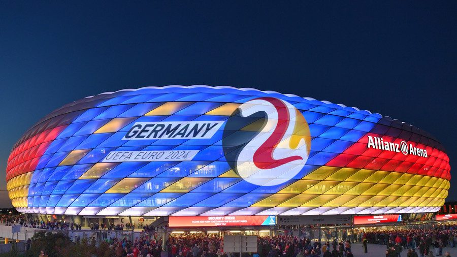

UEFA EURO 2024 GERMANY
Germany had a wide choice of stadiam that satisfied UEFA's minimum capacity requirement of 30,000 seats for European Championship matches. Nine venues used at the 2006 FIFA World Cup were selected: Berlin, Dortmund, Munich, Cologne, Stuttgart, Hamburg, Leipzig, Frankfurt and Gelsenkirchen. Düsseldorf, which was not used in 2006 but had previously been used for the 1974 FIFA World Cup and UEFA Euro 1988, will serve as the tenth venue; conversely, Hanover, Nuremberg and Kaiserslautern, host cities in 2006, will not be used for this championship.
Various other stadiums, such as those in Bremen and Mönchengladbach were not selected. The venues covered all the main regions of Germany, but the area with the highest number of venues at UEFA Euro 2024 is the Rhine-Ruhr metropolitan region in the state of North Rhine-Westphalia, with four of the ten host cities (Dortmund, Düsseldorf, Gelsenkirchen and Cologne).
The final tournament draw will take place in December 2023 at the Elbphilharmonie in Hamburg. The format used in 2016 and 2020 will be retained.
As hosts, Germany qualified for the tournament automatically. The 23 remaining spots will be determined through qualifying, with the draw to be held on 9 October 2022 at the Festhalle in Frankfurt. The qualifying group stage will take place from March to November 2023, while the play-offs, linked with the 2022–23 UEFA Nations League, will be held in March 2024
Related Articles